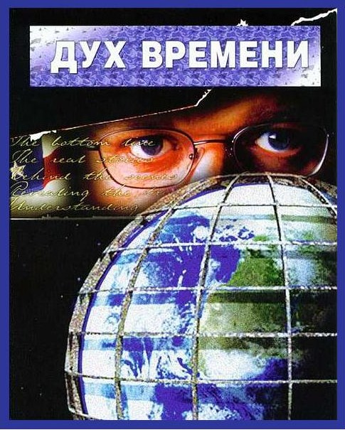

|  | |
| В фильме поднимается вопрос массового контроля над людьми — религия, политика, масс-медиа, финансы. Все ли, что мы видим, правда, или не хотим ее замечать? Настолько ли светло наше будущее? Вот лишь некоторые вопросы, которые обязательно возникнут в голове после просмотра. | |
| Дата выхода: 2007 г. | Жанр: Документальное |
| Страна: США | Режиссёр: Питер Джозеф |
| Длительность: 118 мин. | |